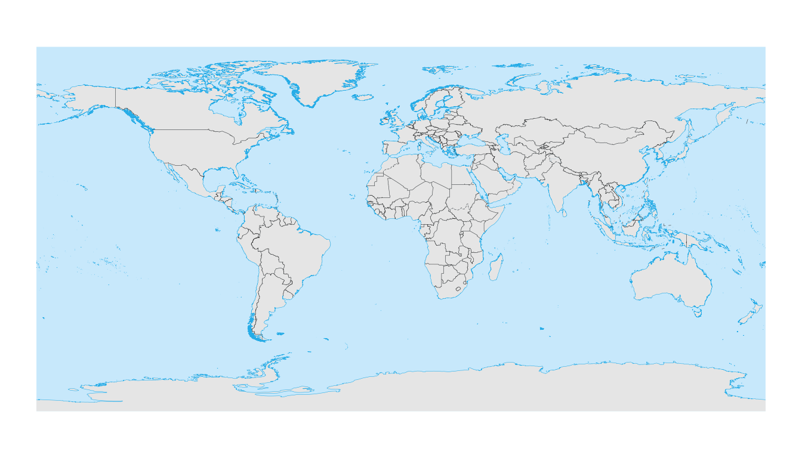
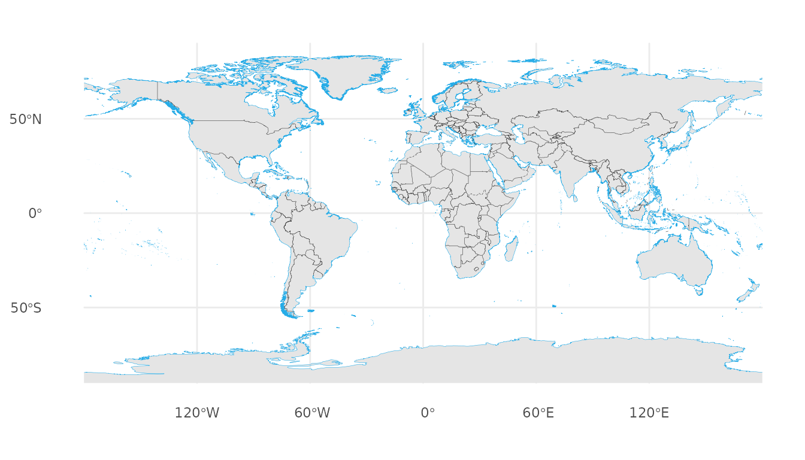
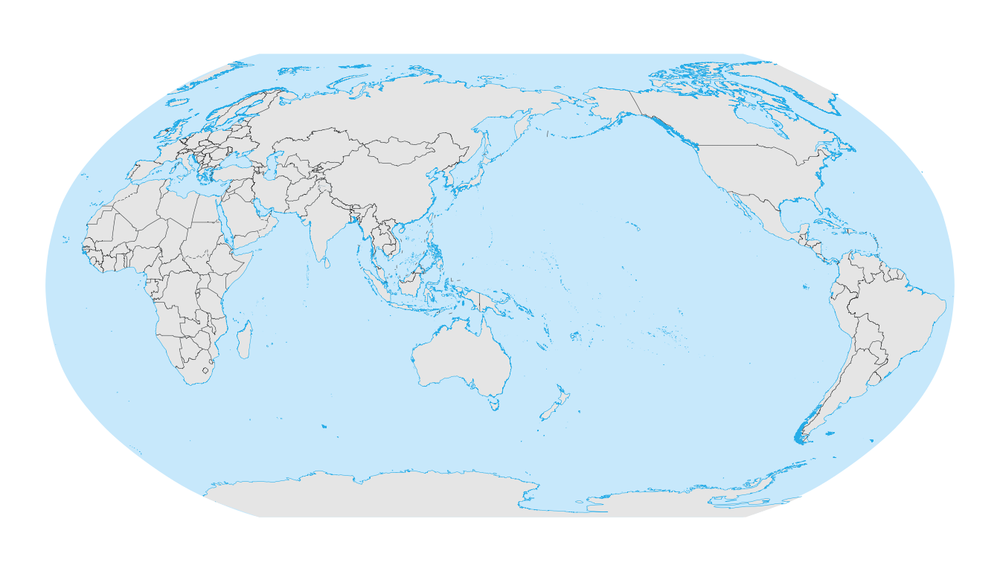
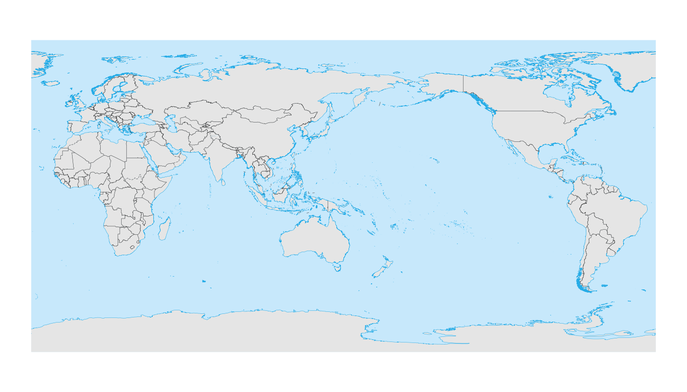
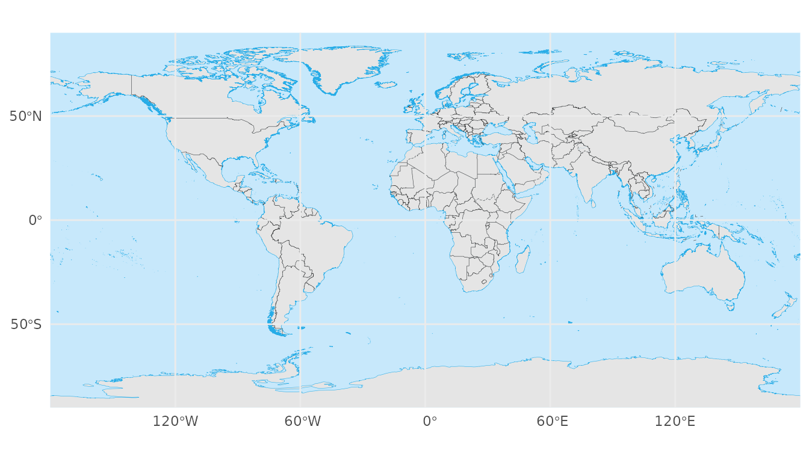
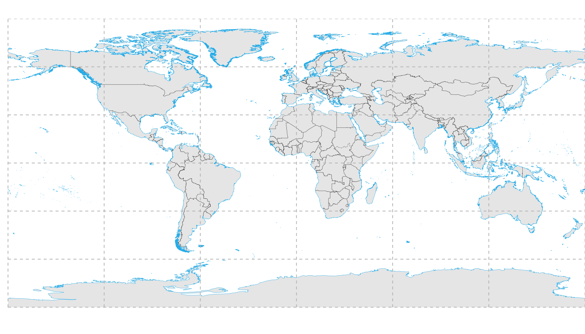
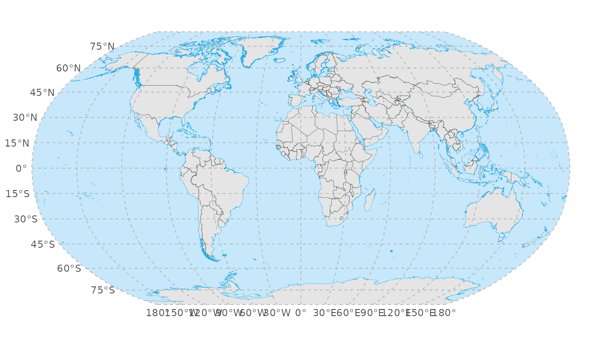
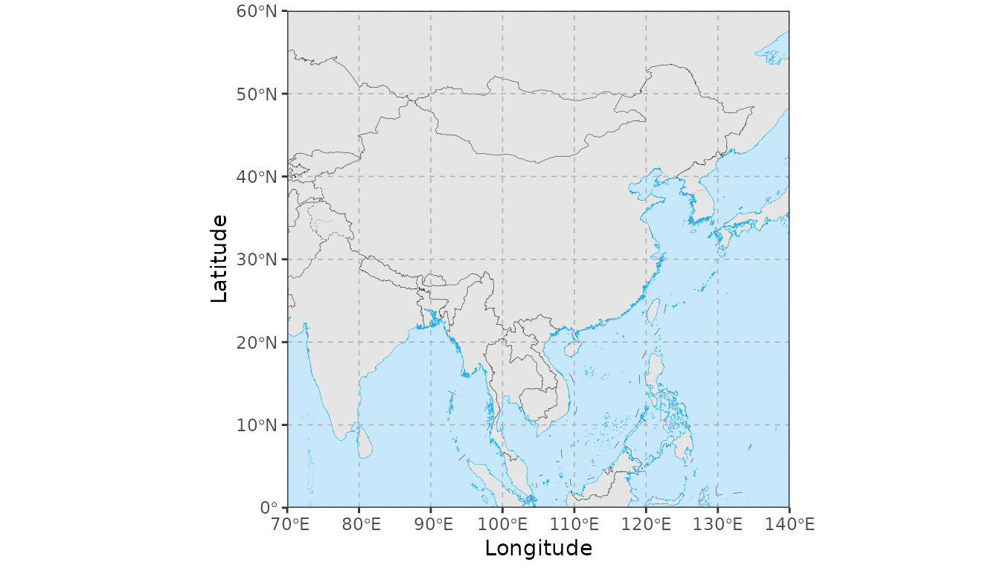
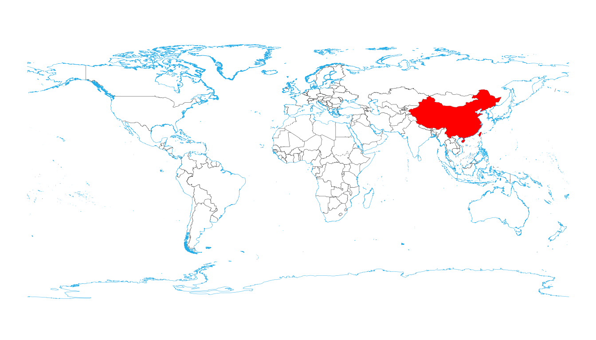
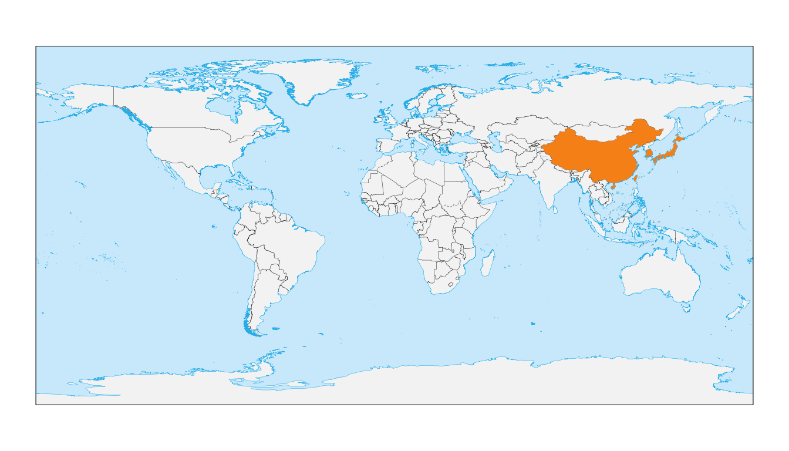

World map overview with geom_world()
Source:vignettes/World_Map_Overview.Rmd
World_Map_Overview.Rmd1. Introduction
geom_world() provides a convenient global base map for
ggplot2. It comes bundled with country polygons,
coastlines, and political/administrative boundaries.
Key features include: * Automatic CRS transformation: Seamlessly projects data to your desired Coordinate Reference System. * Antimeridian splitting: Handles the “Pacific wrap-around” issue automatically when changing central meridians. * Layer control: Toggles for ocean background and administrative boundaries.
2. Basic usage
2.1 Default WGS84 map
By default, geom_world() plots the map using the WGS84
standard.
ggplot() +
geom_world() +
theme_void()
2.2 Explicit CRS specification
You can specify the CRS directly within the function.
ggplot() +
geom_world(crs = 4326) +
coord_sf(crs = 4326) +
theme_void()
2.3 Hiding the ocean layer
For a cleaner look, you can remove the blue ocean background and change the land fill color.
ggplot() +
geom_world(
show_ocean = FALSE,
country_fill = "grey90"
) +
theme_minimal()
2.4 Hiding administrative boundaries
If you only need continental landmasses without internal country
borders, set show_admin_boundaries = FALSE.
ggplot() +
geom_world(
show_admin_boundaries = FALSE,
country_fill = "white"
) +
theme_minimal()
Combining both options creates a minimalist silhouette map:
ggplot() +
geom_world(
show_ocean = FALSE,
show_admin_boundaries = FALSE
) +
theme_minimal()
3. Projections
geom_world() shines when working with different map
projections. It automatically projects the underlying polygons.
3.1 Robinson projection
crs_robin <- "+proj=robin +datum=WGS84"
ggplot() +
geom_world(crs = crs_robin) +
coord_sf(crs = crs_robin) +
theme_void()
3.2 Robinson projection centred at 150°E
Changing the central meridian (centering the map on the Pacific) is
often difficult in standard ggplot2. geom_world() handles
the polygon splitting automatically.
crs_robin_150 <- "+proj=robin +lon_0=150 +datum=WGS84"
ggplot() +
geom_world(crs = crs_robin_150) +
coord_sf(crs = crs_robin_150) +
theme_void()
3.3 Geographic CRS with shifted central meridian
crs_wgs84_150 <- "+proj=longlat +datum=WGS84 +lon_0=150"
ggplot() +
geom_world(crs = crs_wgs84_150) +
coord_sf(crs = crs_wgs84_150) +
theme_void()
4. Axis labels and gridlines
A common issue with coord_sf() is that gridlines appear,
but axis labels (coordinates) disappear. This often occurs when: *
expand = TRUE extends the map beyond ±180° or ±90°. * The
CRS lacks a geographic datum. * Solid layers (like the ocean polygon)
are drawn on top of the panel grid.
Recommended pattern for reliable axis labels: Use
expand = FALSE inside coord_sf and set
panel.ontop = TRUE in the theme.
ggplot() +
geom_world() +
coord_sf(
crs = 4326,
expand = FALSE,
datum = sf::st_crs(4326)
) +
theme_minimal() +
theme(panel.ontop = TRUE)
5. Graticule annotation (meridians & parallels)
annotation_graticule() provides precise control over
meridians and parallels. Unlike standard gridlines, these are annotation
layers that: * Are generated in WGS84 and transformed to your target
CRS. * Allow for custom line spacing (lon_step,
lat_step) and label placement.
5.1 Global WGS84 map with graticules
ggplot() +
geom_world() +
annotation_graticule(
lon_step = 60,
lat_step = 30,
label_offset = 5
) +
coord_sf(
crs = 4326,
expand = FALSE,
datum = sf::st_crs(4326)
) +
theme_void() +
theme(panel.ontop = TRUE)
#> Spherical geometry (s2) switched off
#> Spherical geometry (s2) switched on
5.2 Robinson projection
Note how the graticules curve naturally with the projection.
crs_robin <- "+proj=robin +datum=WGS84"
ggplot() +
geom_world(crs = crs_robin) +
annotation_graticule(
crs = crs_robin,
lon_step = 30,
lat_step = 15,
label_offset = 3e5
) +
coord_sf(crs = crs_robin) +
theme_void()
#> Spherical geometry (s2) switched off
#> Spherical geometry (s2) switched on
5.3 Regional China map (clean axis labels)
For regional maps, the recommended pattern is to: 1. Use
annotation_graticule() to draw the lines but hide its
internal labels (label_color = NA). 2. Use standard
labs() or coord_sf labels for the axes. 3.
Keep the region exact with expand = FALSE.
cn_xlim <- c(70, 140)
cn_ylim <- c(0, 60)
ggplot() +
geom_world() +
annotation_graticule(
xlim = cn_xlim,
ylim = cn_ylim,
crs = 4326,
lon_step = 10,
lat_step = 10,
label_color = NA,
label_offset = 1,
label_size = 3.5
) +
coord_sf(
xlim = cn_xlim,
ylim = cn_ylim,
expand = FALSE
) +
labs(
x = "Longitude",
y = "Latitude"
) +
theme_bw()
#> Spherical geometry (s2) switched off
#> Spherical geometry (s2) switched on
6. Highlighting selected countries
You can create “highlight” maps by layering geom_world()
calls. The first call draws the base (e.g., white), and the second call
filters for specific countries to color them.
6.1 Highlighting China
ggplot() +
geom_world(
country_fill = "white",
show_frame = TRUE
) +
geom_world(
filter_attribute = "SOC",
filter = "CHN",
country_fill = "red"
) +
theme_void()
6.2 Highlighting multiple countries
Pass a vector of ISO codes to highlight multiple regions.
focus <- c("CHN", "JPN", "KOR")
ggplot() +
geom_world(
country_fill = "grey95",
show_frame = TRUE
) +
geom_world(
filter_attribute = "SOC",
filter = focus,
country_fill = "#f57f17"
) +
theme_void()
7. Summary
This vignette introduced how to: * Draw global maps using
geom_world(). * Control ocean and administrative boundary
layers. * Work with different projections. * Avoid missing axis labels
in coord_sf(). * Add custom meridians/parallels with
annotation_graticule(). * Highlight individual or groups of
countries.